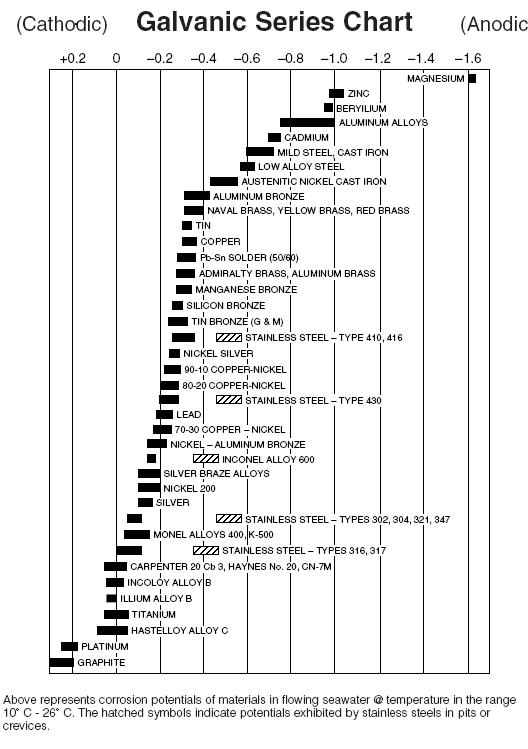

Modulul 01
Câmpul electrostatic și câmpul electric imprimat
Studiul câmpului electric pornește din electrostatică și conduce către explicarea surselor de tensiune. În acest modul sunt introduse câmpul creat de sarcini, reprezentarea sa prin linii de câmp și câmpul electric imprimat din sursele reale.
1. Câmpul electric în electrostatică
În electrostatică, sarcinile electrice sunt considerate în repaus. O sarcină sursă Q creează în spațiul din jurul său un câmp electric. Dacă într-un punct P se introduce o sarcină de probă pozitivă q0, asupra ei acționează forța electrică F. Câmpul electric este definit local prin:
Așadar, E este un vector: are modul, direcție și sens. Sensul său este cel al forței care ar acționa asupra unei sarcini de probă pozitive. Unitatea SI este N/C; echivalent, se poate scrie V/m.
2. Câmpul unei sarcini punctiforme
Pentru o sarcină punctiformă Q, aflată într-un mediu cu permitivitatea ε, legea lui Coulomb și definiția câmpului conduc la expresia vectorială:
Vectorul unitar ur indică direcția radială, de la sarcina sursă spre punctul observat. Pentru Q > 0, câmpul este orientat spre exterior; pentru Q < 0, sensul său este spre sarcină. În vid, N·m²/C².
Dacă distanța se dublează, modulul câmpului devine de patru ori mai mic.
Modulul câmpului crește proporțional cu |Q|.
3. Liniile de câmp electric
Liniile de câmp sunt o reprezentare grafică a vectorului E. Tangenta la o linie într-un punct indică direcția vectorului câmp, iar densitatea mai mare a liniilor indică un câmp mai intens. Liniile pornesc de la sarcini pozitive și se termină pe sarcini negative sau la infinit. Ele nu se intersectează: într-un punct, câmpul are o singură direcție bine definită.
4. Principiul superpoziției
Câmpul produs de mai multe sarcini este suma vectorială a câmpurilor produse de fiecare sarcină în parte. Pentru N sarcini punctiforme:
Suma trebuie efectuată pe componente. De exemplu, dacă într-un punct N/C și N/C, atunci N/C, iar modulul este 5 N/C.
5. Potențial electric și tensiune
În electrostatică, câmpul este conservativ. Diferența de potențial dintre punctele A și B se definește prin integrala de linie:
Relația arată că vectorul câmp este orientat spre scăderea potențialului. Pentru un câmp uniform între plăci, dacă deplasarea are loc pe direcția câmpului, în modul.
6. Câmpul electric imprimat
Într-un circuit închis, câmpul electrostatic din conductor ar redistribui sarcinile până la echilibru, iar curentul ar înceta. În interiorul unei surse, forțe de natură chimică, mecanică sau termică deplasează sarcinile în sens opus câmpului electrostatic. Câmpul asociat acestor forțe se numește câmp electric imprimat.
7. Exemplu: pila Volta
Pila Volta este un exemplu de sursă electrochimică. Două metale diferite, separate de un electrolit, formează o celulă galvanică. Reacțiile chimice de la electrozi separă sarcinile: un electrod devine negativ, iar celălalt pozitiv.
Când bornele sunt conectate printr-un conductor, electronii circulă prin circuitul exterior de la borna negativă spre borna pozitivă. Energia chimică din pilă este transformată în energie electrică, iar câmpul electric imprimat reface permanent separarea sarcinilor cât timp reacțiile chimice pot continua.
8. Exemplu: seria galvanică
Seria galvanică compară comportamentul metalelor într-un anumit electrolit. Metalele mai active pot ceda mai ușor electroni și devin anod într-un cuplu galvanic, iar metalele mai nobile tind să devină catod. Cu cât două metale sunt mai depărtate în serie, cu atât diferența de potențial dintre ele poate fi mai mare.

De exemplu, zincul și cuprul formează un cuplu potrivit pentru ilustrarea unei pile: zincul este mai activ și tinde să fie anodul, iar cuprul este mai nobil și tinde să fie catodul. În practică, seria trebuie folosită pentru mediul indicat de diagramă, deoarece comportamentul metalelor depinde de electrolit.
9. Tensiunea electromotoare
Tensiunea electromotoare, notată de obicei cu E sau ε, reprezintă lucrul efectuat de forțele câmpului imprimat pentru a transporta o unitate de sarcină prin interiorul sursei.
Tensiunea electromotoare se măsoară în volți (V).
- Precizează direcția câmpului unei sarcini punctiforme pozitive și a uneia negative.
- De ce liniile de câmp electric nu se pot intersecta?
- Calculează modulul câmpului rezultant pentru N/C.
- Ce rol are câmpul electric imprimat într-o pilă Volta?
10. Laborator: câmpul electrostatic în vid
Adaugă sau mută sarcini punctiforme și explorează câmpul, potențialul și forțele dintre ele. Domeniul reprezentat este de la −1 m la +1 m pe fiecare axă. Aproape de sarcini, modelul folosește o rază de netezire de 0,02 m pentru a evita singularitatea.
Clic pe zona liberă: adaugă o sarcină; trage o sarcină pentru a o muta. Straturile se recalculează la eliberare. Selectează o sarcină pentru a-i modifica valoarea sau a o șterge. Funcționează și prin atingere.
Axa x crește spre dreapta, iar y în sus. Săgețile verzi indică forțele rezultante, cu lungimi reprezentate la scară relativă.
Deplasează cursorul peste diagramă pentru a vedea câmpul și potențialul.
| Sarcină | q (nC) | x (m) | y (m) | |F| (N) | θ |
|---|